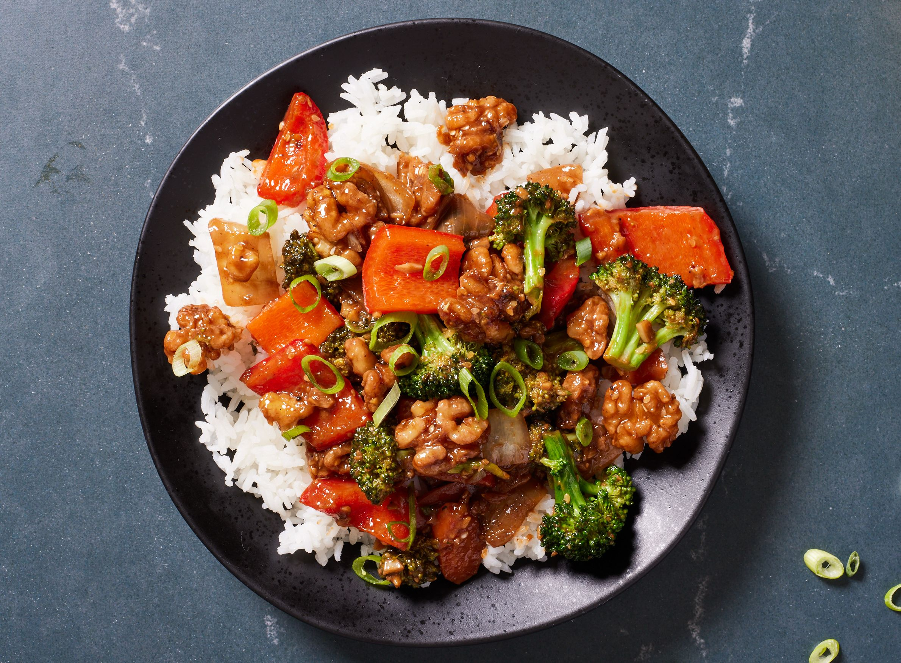

YES SIR, STIR FRY

This is a recipe for the probably the most delicious stir fry you will ever eat (but not really because it isn't real.)
INGREDIENTS
- Jasmine Rice
- Meat of Your Choice
- Onion
- Broccoli
- Garlic
- Bell Pepper
- Sesame Oil
- Soy Sauce
- Salt and Pepper
STEPS YOU GOTTA TAKE
- FIRST YOU GOTTA CUT EVERYTHING UP IN STIR FRY SIZE
- THEN YOU GOTTA HEAT UP THAT SESAME OIL
- NEXT UP YOU GOTTA SAUTE EVERYTHING IN SMALL BATCHES UNTIL DESIRED TEXTURE
- RUN THAT RICE THROUGH THE PRESSURE COOKER - DON'T EVEN TRY TO WORK HARD
- ONCE EVERYTHING IS COOKED, SEASON TO TASTE AND EAT UP!